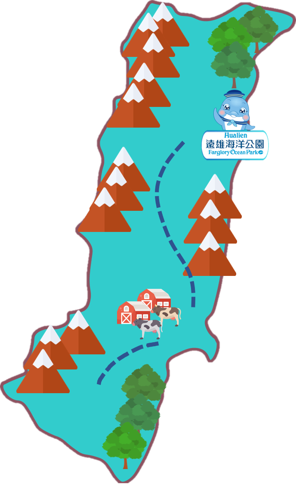

| 花蓮地區 | |
| 特色 | 資訊介紹 |
| 花蓮地區 | 花蓮地區是大自然特別眷顧的地方，臺灣最美麗的驚嘆號！擁有許多世界級的山水美景，西元1590年，葡萄牙人航經臺灣東岸，看見壯麗的山川美景呈現於眼前，不禁驚呼「FORMOSA福爾摩沙」，從此，花蓮的壯闊景緻便成為臺灣的代表。花蓮古稱奇萊，又因花蓮溪東注於海，其水與海濤激流迂迴澎湃，而稱為洄瀾，後人諧其音稱為花蓮。花蓮是臺灣最大的縣份，面積約4628平方公里，人口約有35萬人，東臨浩瀚太平洋，西倚雄偉的中央山脈，以巍峨的高山、蔚藍的天空、浩瀚的海洋、景色秀麗的縱谷、多樣性的人文風貌、親切善良的人民，成為全國最喜歡旅遊縣市的首選，並深受國際遊客的喜愛。如此依山傍海的優美環境，造就無數的山水美景，全縣幾乎位於國家設立的風景區中，縣內有高山峽谷的太魯閣國家公園、雄偉壯闊的玉山國家公園、自然景觀秀麗的東部海岸國家風景區、田園美景的花東縱谷國家風景區，再再證明花蓮的渾然天成。 |